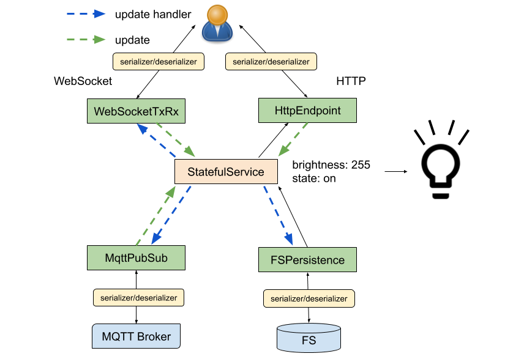

Developing with the Framework
The back end is a set of REST endpoints hosted by a ESPAsyncWebServer instance. The 'lib/framework' directory contains the majority of the back end code. The framework contains a number of useful utility classes which you can use when extending it. The project also comes with a demo project to give you some help getting started.
The framework's source is split up by feature, for example WiFiScanner.h implements the end points for scanning for available networks where as WiFiSettingsService.h handles configuring the WiFi settings and managing the WiFi connection.
Initializing the framework
The 'src/main.cpp' file constructs the webserver and initializes the framework. You can add endpoints to the server here to support your IoT project. The main loop is also accessible so you can run your own code easily.
The following code creates the web server and esp32sveltekit framework:
AsyncWebServer server(80);
ESP32SvelteKit esp32sveltekit(&server);
Now in the setup() function the initialization is performed:
void setup() {
// start serial and filesystem
Serial.begin(SERIAL_BAUD_RATE);
// start the framework and demo project
esp32sveltekit.setMDNSAppName("ESP32 SvelteKit Demo App");
esp32sveltekit.begin();
// start the server
server.begin();
}
Finally the loop calls the framework's loop function to service the frameworks features.
void loop() {
// run the framework's loop function
esp32sveltekit.loop();
}
Stateful Service
The framework promotes a modular design and exposes features you may re-use to speed up the development of your project. Where possible it is recommended that you use the features the frameworks supplies. These are documented in this section and a comprehensive example is provided by the demo project.
The following diagram visualizes how the framework's modular components fit together, each feature is described in detail below.

The StatefulService.h class is responsible for managing state. It has an API which allows other code to update or respond to updates in the state it manages. You can define a data class to hold state, then build a StatefulService class to manage it. After that you may attach HTTP endpoints, WebSockets or MQTT topics to the StatefulService instance to provide commonly required features.
Here is a simple example of a state class and a StatefulService to manage it:
class LightState {
public:
bool on = false;
uint8_t brightness = 255;
};
class LightStateService : public StatefulService<LightState> {
};
You may listen for changes to state by registering an update handler callback. It is possible to remove an update handler later if required.
// register an update handler
update_handler_id_t myUpdateHandler = lightStateService.addUpdateHandler(
[&](const String& originId) {
Serial.print("The light's state has been updated by: ");
Serial.println(originId);
}
);
// remove the update handler
lightStateService.removeUpdateHandler(myUpdateHandler);
An "originId" is passed to the update handler which may be used to identify the origin of an update. The default origin values the framework provides are:
| Origin | Description |
|---|---|
| http | An update sent over REST (HttpEndpoint) |
| mqtt | An update sent over MQTT (MqttPubSub) |
| websocket:{clientId} | An update sent over WebSocket (WebSocketRxTx) |
StatefulService exposes a read function which you may use to safely read the state. This function takes care of protecting against parallel access to the state in multi-core environments such as the ESP32.
lightStateService.read([&](LightState& state) {
digitalWrite(LED_PIN, state.on ? HIGH : LOW); // apply the state update to the LED_PIN
});
StatefulService also exposes an update function which allows the caller to update the state with a callback. This function automatically calls the registered update handlers if the state has been changed. The example below changes the state of the light (turns it on) using the arbitrary origin "timer" and returns the "CHANGED" state update result, indicating that a change was made:
lightStateService.update([&](LightState& state) {
if (state.on) {
return StateUpdateResult::UNCHANGED; // lights were already on, return UNCHANGED
}
state.on = true; // turn on the lights
return StateUpdateResult::CHANGED; // notify StatefulService by returning CHANGED
}, "timer");
There are three possible return values for an update function which are as follows:
| Origin | Description |
|---|---|
| StateUpdateResult::CHANGED | The update changed the state, propagation should take place if required |
| StateUpdateResult::UNCHANGED | The state was unchanged, propagation should not take place |
| StateUpdateResult::ERROR | There was an error updating the state, propagation should not take place |
Serialization
When reading or updating state from an external source (HTTP, WebSockets, or MQTT for example) the state must be marshalled into a serializable form (JSON). SettingsService provides two callback patterns which facilitate this internally:
| Callback | Signature | Purpose |
|---|---|---|
| JsonStateReader | void read(T& settings, JsonObject& root) | Reading the state object into a JsonObject |
| JsonStateUpdater | StateUpdateResult update(JsonObject& root, T& settings) | Updating the state from a JsonObject, returning the appropriate StateUpdateResult |
The static functions below can be used to facilitate the serialization/deserialization of the light state:
class LightState {
public:
bool on = false;
uint8_t brightness = 255;
static void read(LightState& state, JsonObject& root) {
root["on"] = state.on;
root["brightness"] = state.brightness;
}
static StateUpdateResult update(JsonObject& root, LightState& state) {
state.on = root["on"] | false;
state.brightness = root["brightness"] | 255;
return StateUpdateResult::CHANGED;
}
};
For convenience, the StatefulService class provides overloads of its update and read functions which utilize these functions.
Read the state to a JsonObject using a serializer:
JsonObject jsonObject = jsonDocument.to<JsonObject>();
lightStateService->read(jsonObject, LightState::read);
Update the state from a JsonObject using a deserializer:
JsonObject jsonObject = jsonDocument.as<JsonObject>();
lightStateService->update(jsonObject, LightState::update, "timer");
Endpoints
The framework provides an HttpEndpoint.h class which may be used to register GET and POST handlers to read and update the state over HTTP. You may construct an HttpEndpoint as a part of the StatefulService or separately if you prefer.
The code below demonstrates how to extend the LightStateService class to provide an unsecured endpoint:
class LightStateService : public StatefulService<LightState> {
public:
LightStateService(AsyncWebServer* server) :
_httpEndpoint(LightState::read, LightState::update, this, server, "/rest/lightState") {
}
private:
HttpEndpoint<LightState> _httpEndpoint;
};
Endpoint security is provided by authentication predicates which are documented below. The SecurityManager and authentication predicate may be provided if a secure endpoint is required. The placeholder project shows how endpoints can be secured.
Persistence
FSPersistence.h allows you to save state to the filesystem. FSPersistence automatically writes changes to the file system when state is updated. This feature can be disabled by calling disableUpdateHandler() if manual control of persistence is required.
The code below demonstrates how to extend the LightStateService class to provide persistence:
class LightStateService : public StatefulService<LightState> {
public:
LightStateService(FS* fs) :
_fsPersistence(LightState::read, LightState::update, this, fs, "/config/lightState.json") {
}
private:
FSPersistence<LightState> _fsPersistence;
};
WebSockets
WebSocketTxRx.h allows you to read and update state over a WebSocket connection. WebSocketTxRx automatically pushes changes to all connected clients when state is updated.
The code below demonstrates how to extend the LightStateService class to provide an unsecured WebSocket:
class LightStateService : public StatefulService<LightState> {
public:
LightStateService(AsyncWebServer* server) :
_webSocket(LightState::read, LightState::update, this, server, "/ws/lightState"), {
}
private:
WebSocketTxRx<LightState> _webSocket;
};
WebSocket security is provided by authentication predicates which are documented below. The SecurityManager and authentication predicate may be provided if a secure WebSocket is required. The placeholder project shows how WebSockets can be secured.
MQTT
The framework includes an MQTT client which can be configured via the UI. MQTT requirements will differ from project to project so the framework exposes the client for you to use as you see fit. The framework does however provide a utility to interface StatefulService to a pair of pub/sub (state/set) topics. This utility can be used to synchronize state with software such as Home Assistant.
MqttPubSub.h allows you to publish and subscribe to synchronize state over a pair of MQTT topics. MqttPubSub automatically pushes changes to the "pub" topic and reads updates from the "sub" topic.
The code below demonstrates how to extend the LightStateService class to interface with MQTT:
class LightStateService : public StatefulService<LightState> {
public:
LightStateService(AsyncMqttClient* mqttClient) :
_mqttPubSub(LightState::read,
LightState::update,
this,
mqttClient,
"homeassistant/light/my_light/set",
"homeassistant/light/my_light/state") {
}
private:
MqttPubSub<LightState> _mqttPubSub;
};
You can re-configure the pub/sub topics at runtime as required:
_mqttPubSub.configureBroker("homeassistant/light/desk_lamp/set", "homeassistant/light/desk_lamp/state");
The demo project allows the user to modify the MQTT topics via the UI so they can be changed without re-flashing the firmware.
Security features
The framework has security features to prevent unauthorized use of the device. This is driven by SecurityManager.h.
On successful authentication, the /rest/signIn endpoint issues a JSON Web Token (JWT) which is then sent using Bearer Authentication. For this add an Authorization-Header to the request with the Content Bearer {JWT-Secret}. The framework come with built-in predicates for verifying a users access privileges. The built in AuthenticationPredicates can be found in SecurityManager.h and are as follows:
| Predicate | Description |
|---|---|
| NONE_REQUIRED | No authentication is required. |
| IS_AUTHENTICATED | Any authenticated principal is permitted. |
| IS_ADMIN | The authenticated principal must be an admin. |
You can use the security manager to wrap any request handler function with an authentication predicate:
server->on("/rest/someService", HTTP_GET,
_securityManager->wrapRequest(std::bind(&SomeService::someService, this, std::placeholders::_1), AuthenticationPredicates::IS_AUTHENTICATED)
);
Placeholder substitution
Various settings support placeholder substitution, indicated by comments in factory_settings.ini. This can be particularly useful where settings need to be unique, such as the Access Point SSID or MQTT client id. The following placeholders are supported:
| Placeholder | Substituted value |
|---|---|
| #{platform} | The microcontroller platform, e.g. "esp32" or "esp32c3" |
| #{unique_id} | A unique identifier derived from the MAC address, e.g. "0b0a859d6816" |
| #{random} | A random number encoded as a hex string, e.g. "55722f94" |
You may use SettingValue::format in your own code if you require the use of these placeholders. This is demonstrated in the demo project:
static StateUpdateResult update(JsonObject& root, LightMqttSettings& settings) {
settings.mqttPath = root["mqtt_path"] | SettingValue::format("homeassistant/light/#{unique_id}");
settings.name = root["name"] | SettingValue::format("light-#{unique_id}");
settings.uniqueId = root["unique_id"] | SettingValue::format("light-#{unique_id}");
return StateUpdateResult::CHANGED;
}
Accessing settings and services
The framework supplies access to various features via getter functions:
| SettingsService | Description |
|---|---|
| getFS() | The filesystem used by the framework |
| getSecurityManager() | The security manager - detailed above |
| getSecuritySettingsService() | Configures the users and other security settings |
| getWiFiSettingsService() | Configures and manages the WiFi network connection |
| getAPSettingsService() | Configures and manages the Access Point |
| getNTPSettingsService() | Configures and manages the network time |
| getOTASettingsService() | Configures and manages the Over-The-Air update feature |
| getMqttSettingsService() | Configures and manages the MQTT connection |
| getMqttClient() | Provides direct access to the MQTT client instance |
| getNotificationEvents() | Lets you send push notifications to all clients |
| getSleepService() | Send the ESP32 into deep sleep |
| getBatteryService() | Update battery information on the client |
The core features use the StatefulService.h class and can therefore you can change settings or observe changes to settings through the read/update API.
Inspect the current WiFi settings:
esp32sveltekit.getWiFiSettingsService()->read([&](WiFiSettings& wifiSettings) {
Serial.print("The ssid is:");
Serial.println(wifiSettings.ssid);
});
Configure the WiFi SSID and password manually:
esp32sveltekit.getWiFiSettingsService()->update([&](WiFiSettings& wifiSettings) {
wifiSettings.ssid = "MyNetworkSSID";
wifiSettings.password = "MySuperSecretPassword";
return StateUpdateResult::CHANGED;
}, "myapp");
Observe changes to the WiFiSettings:
esp32sveltekit.getWiFiSettingsService()->addUpdateHandler(
[&](const String& originId) {
Serial.println("The WiFi Settings were updated!");
}
);
Other functions provided
MDNS Instance Name
ESP32 SvelteKit uses mDNS / Bonjour to advertise its services into the local network. You can set the mDNS instance name property by calling
esp32sveltekit.setMDNSAppName("ESP32 SvelteKit Demo App");
making the entry a little bit more verbose. This must be called before esp32sveltekit.begin();. If you want to advertise further services just include #include <ESPmNDS.h> and use MDNS.addService() regularly.
Factory Reset
A factory reset can not only be evoked from the API, but also by calling
esp32sveltekit.factoryReset();
from your code. This will erase the complete settings folder, wiping out all settings. This can be a last fall back mode if somebody has forgotten his credentials.
Recovery Mode
There is also a recovery mode present which will force the creation of an access point. By calling
esp32sveltekit.recoveryMode();
will force a start of the AP regardless of the AP settings. It will not change the the AP settings. To exit the recovery mode restart the device or change the AP settings in the UI.
Push Notifications to All Clients
It is possibly to send push notifications to all clients by using Server Side Events. These will be displayed as toasts an the client side. Either directly call
esp32sveltekit.getNotificationEvents()->pushNotification("Pushed a message!", INFO, millis());
or keep a local pointer to the NotificationEvents instance. It is possible to send INFO, WARNING, ERROR and SUCCESS events to all clients. The HTTP endpoint for this service is at /events/notifications.
In addition the raw send() function is mapped out as well:
esp32sveltekit.getNotificationEvents()->send("Pushed a message!", "event", millis());
This allows you to send your own Server-Sent Events without opening a new HTTP connection.
Power Down with Deep Sleep
This API service can place the ESP32 in the lowest power deep sleep mode consuming only a few µA. It uses the EXT1 wakeup source, so the ESP32 can be woken up with a button or from a peripherals interrupt. Consult the ESP-IDF Api Reference which GPIOs can be used for this. The RTC will also be powered down, so an external pull-up or pull-down resistor is required. It is not possible to persist variable state through the deep sleep.
The settings wakeup pin definition and the signal polarity need to be defined in factory_settings.ini:
; Deep Sleep Configuration
-D WAKEUP_PIN_NUMBER=38 ; pin number to wake up the ESP
-D WAKEUP_SIGNAL=0 ; 1 for wakeup on HIGH, 0 for wakeup on LOW
A callback function can be attached and triggers when the ESP32 is requested to go into deep sleep. This allows you to safely deal with the power down event. Like persisting software state by writing to the flash, tiding up or notify a remote server about the immanent disappearance.
esp32sveltekit.getSleepService()->attachOnSleepCallback();
Also the code can initiate the power down deep sleep sequence by calling:
esp32sveltekit.getSleepService()->sleepNow();
Battery State of Charge
A small helper class let's you update the battery icon in the status bar. This is useful if you have a battery operated IoT device. It must be enabled in features.ini. It uses Server-sent events and exposes two functions that can be used to update the clients.
esp32sveltekit.getBatteryService()->updateSOC(float stateOfCharge); // update state of charge in percent (0 - 100%)
esp32sveltekit.getBatteryService()->setCharging(boolean isCharging); // notify the client that the device is charging